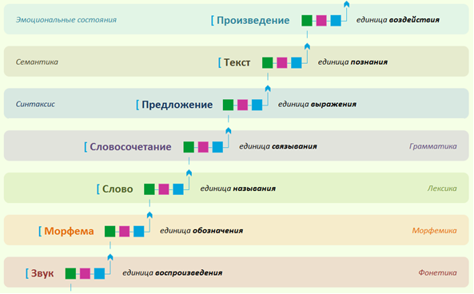
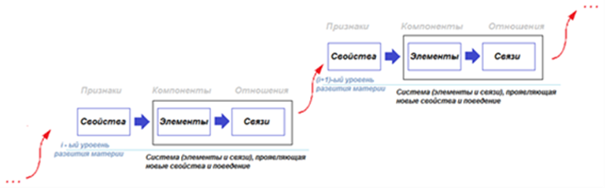
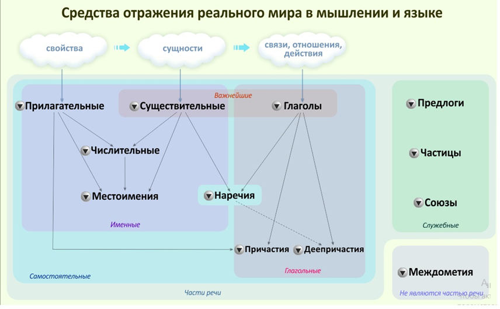

Законы, которые мы прослеживаем в построении языковых фрагментов, наблюдаются на каждом уровне языка. На рисунке изображены 7 уровней языка. Каждый уровень
образуется элементами, которые соединяясь между собой связями, образуют систему на новом уровне, проявляющую новые свойства. Вновь образованная система обуславливает
переход себя в качестве элемента на следующий уровень. Триада «свойства – элементы – связи», и далее продолжая «связи – свойства - …», повторяется на каждом уровне
иерархии и является метамоделью устройства окружающего нас мира.
Обращаем внимание, что «элементы + связи» определяют систему, а система – это то, что проявляет новые свойства, ранее не наблюдаемые ни у одного из её элементов.
Таким образом, триады «свойства – элементы – связи» связаны между собой, образуя мегасистему.
Задания
Опишите на каждом уровне языка, какие новые свойства проявляет элемент системы.
Каждый уровень языка (система) выполняет свою цель, выполняет определённую функцию и является устойчивой структурой. Систем без целей не бывает.


Иерархическая система языка. Язык как мега и мета система
Уровень 1.
Звук – это то, что минимально может воспроизвести наш голосовой аппарат. На письме в русском языке звуки обозначаются буквами.
Уровень 2.
Каждая морфема состоит из звуков и что-то обозначает. Например, «га» - движение (телега, нога, бродяга, галоп, дорога, двигать), «коло» - круг
(колокол, коловрат, коловорот, кол, как ось вращения, околица, около, колобок), «гай» - звонкий, «ва» - вода. «Гайва» - звонкая вода, микрорайон в Перми, названный
так по названию речки, протекающей через него. «Ведьма», «медведь», «радуга» и так далее. В древности люди составляли слова (так как мы сейчас составляем предложения
из слов) креативно из слогов, пытаясь донести до собеседника совокупные свойства предмета. Часть смыслов морфем на сегодняшний день забыта и сейчас активно
восстанавливается. В современном мире процесс словообразования из морфем продолжается: «самолет», «паровоз», «пар-о-воз-о-стр-о-и-тель-н-ый».
Понять смысл конкретной морфемы можно, изучая сходство слов, которые употребляют соответствующую морфему. Например: «Днепр», «Днестр», «Двина», «Дон», «Дунай»,
«Иордан», «дно». Морфемы как более древние элементы языка формировались на основе звукоподражания, например, «скр» в словах скрести, скребок, скрип, скрежет,
кромка, край, или «ш-ш-ш» в словах камыш, шуршать, мышь, шёпот, шелест, или «гр» в словах греметь, гром, град, грохот, громкость.
Часто морфемы и их смысл переходят из одного языка в другой. Например, «комиссия, комиссионный магазин – поручение, выполняемое за определённое вознаграждение, обычно
связанное с куплей и продажей: брать товар на комиссию». Происходит от арабского ??? (хамаса) "брать пятую часть чьих либо денег", хотя в настоящее время комиссия может
быть и меньше, и больше указанной части. Известно повсеместно употребляемая морфема «ва» - аква, акведук, аквариум.
Уровень 3.
Слово, как уже ясно, обозначает сущности и явления окружающего мира (элементы) по набору его составных морфем, выражающих свойства.

Триада «Свойства - элементы – связи» как «прилагательные – существительные – глаголы» на третьем уровне языка
Уровень 4.
Словосочетание – единица связывания слов между собой. Например, такая связь есть в словосочетании «зелёных листьев», но её нет в «маленькие девочек».
Слова в словосочетании должны подчиняться грамматическим законам, сочетаться (быть связаны) в роде, числе падеже.
Например, «Зелёного шара» = (Род(зелёного)=Род(шара)) & (Число(зелёного)=Число(шара)) & (Падеж(зелёного)= Падеж(шара)).
Выполнение трёх законов сохранения в данном примере обеспечивают корректность словосочетания.
Уровень 5.
Предложение – структура из слов, передающая мысль, так как устанавливает порядок, взаимодействие, отношение (систему) сущностей между собой связывающим их глаголом.
Предложение «Мама мыла раму» = С1+Г+С2. Устанавливает отношение Г между двумя сущностями С1 «мама» и С2 «рама». Одно (простое) предложение
соответствует одной мысли. Мысль нельзя передать структурой меньше, чем предложение.
Как определить содержит ли вербальная конструкция «мысль»?
- Если относительно выражения можно сказать истинно оно или ложно, то это мысль. Например, посмотрите вокруг себя… мама моет сейчас здесь раму? Нет! Значит, это мысль.
Предложение выражает отношение говорящего к некоторому отношению в мире, описывает систему. В этом смысле предложение – это функция, которая возвращает «истинно» или
«ложно», то есть является предикатом. Кстати, нейрон – носитель мысли, так как нейрон - предикат. Мысль – это знание, поскольку передаёт причинно-следственную связь.
В математике мысль соответствует уравнению, неравенству, закону, причинно-следственному отношению. Поэтому, предложения при их моделировании представляются уравнениями.
Словосочетания – выражениями. Слова – знаками (переменных и операций). Морфемы – признаками и свойствами. Звуки и буквы – чувствами и ощущениями. Закон (закономерность,
правило) можно передать предложением. Элементарный закон соответствует нейрону.
Текст как набор связанных между собой в систему предложений служит для описания новых понятий в языке, определяя их через старые, ранее известные понятия. Текст иногда
устанавливает определения прямо и непосредственно. Например, «самолет – это средство для самостоятельного передвижения с опорой на воздух». «Метро – подземная
пассажирская электрическая железная дорога». Или познание нового происходит опосредованно с помощью длинных описаний. Тексты передают системы знаний и отображаются в
моделировании системами уравнений. Систему связанных уравнений в физике принято называть теорией, например, молекулярно-кинетическая или электромагнитная теория.
Уровень 7.
Произведения – это тексты с особо организованной структурой, позволяющей управлять чувствами читателя (слушателя), воздействовать на человека.
Мозг составляет модель на каждом уровне языка. Язык – система связанных между собой иерархических моделей.
Задания
Загрузите упражнение с сайта. Рассмотрите как складываются слова в словосочетания и в предложения.